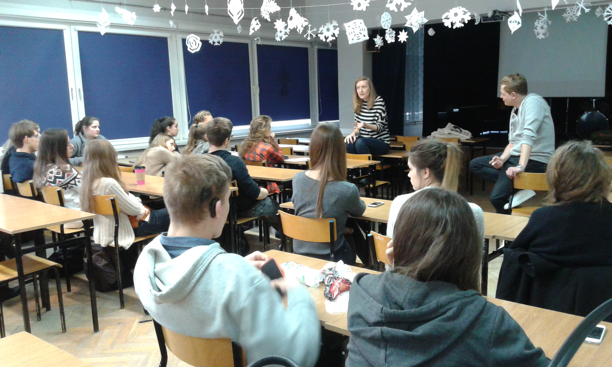

Gazeta ZSO nr II w Opolu
Numer 3/2017
Krytycznie o filmach
 „Jak ci się podobał?”, „fajny” – tak najczęściej wyglądają „dyskusje” poseansowe. Z inicjatywą artystycznego uwrażliwienia oraz popularyzacji krytyki filmowej wśród młodzieży wychodzi Filmoteka Szkolna, organizując warsztaty „Skrytykuj!”. Takie spotkanie w opolskiej Dwójce poprowadzili krytycy filmowi Anna Bielak i Adam Kruk. Punktem wyjścia do pracy z młodzieżą była projekcja filmu „Punkt wyjścia”, wokół którego toczyła się dyskusja o możliwości interpretacyjne obejrzanego dzieła. Młodzi adepci krytyki, którzy interesują się filmem i podejmują swoje pierwsze kroki na recenzenckiej ścieżce, mieli możliwość skonfrontowania swoich odczuć z odczuciami innych uczestników. Uczniowie mogli również porównać własne recenzje z profesjonalistami i usłyszeć cenne rady. Warsztaty miały pokazać uczniom jak konstruuje się ciekawą narrację o obejrzanym filmie oraz jak wygląda poetyka recenzenckiego tekstu i życie codzienne krytyka. Najbardziej zajmującym momentem była praca na tekstach młodzieży, która specjalnie na warsztaty przygotowała krytyczne refleksje na temat poruszających ich filmów. - A. Bielak podpowiedziała nam, że mamy zwracać uwagę nie tylko na historię opowiadaną w filmie, ale również na sposób, w jaki została przedstawiona – mówi Dagmara Cioska, laureatka konkursu na recenzję, Jurorka Młodych na 41. Festiwalu Filmowym w Gdyni. Dwójkowe warsztaty to pokłosie konkursu „Skrytykuj!” w którym Dagmara zajęła pierwsze miejsce. - Do konkursu można zgłaszać nie tylko recenzje pisane, ale również w formie video-bloga, co ja zrobiłam. Zdecydowanie warto spróbować swoich sił w konkursie!
ul. Pułaskiego 3
45-048 Opole
tel. 077 45 422 86
fax 077 02 18 87
e-mail:
bez.tytulu@o2.pl
Ola Orłowska
DTP
Michał Woś
Opiekun
mgr Lucyna Rudnik
Ola Orłowska, Ania Cichy, Dagmara Cioska, Julia Nowicka, Julia Marcinów, Hania Szarzewicz, Michał Woś, Bartek Lipnicki, Jonasz Mularz, Paweł Kubacki, Mateusz Pietruszyński, Mateusz Orlik